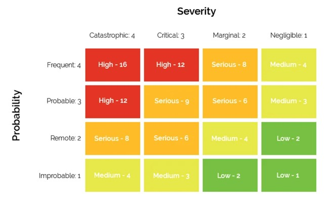

Risks

Risk matrix
To evaluate the level of risk FlickDev Group have used a 4x4 risk matrix ranging from one (low), to sixteen (high). (Levels of a Risk Matrix, 2020)
Source: Levels of a Risk Matrix, 2020
Identified risks
- Storing of user data / Hacking – High
Security
- Lack of development experience – High
- Team stability (Course withdrawals) – Medium
- Inexperience scheduling IT projects – High
Team
- Continued access to databases (Changing methods) – High
- Legal challenges to access data – Serious
- Time required to learn required languages – High